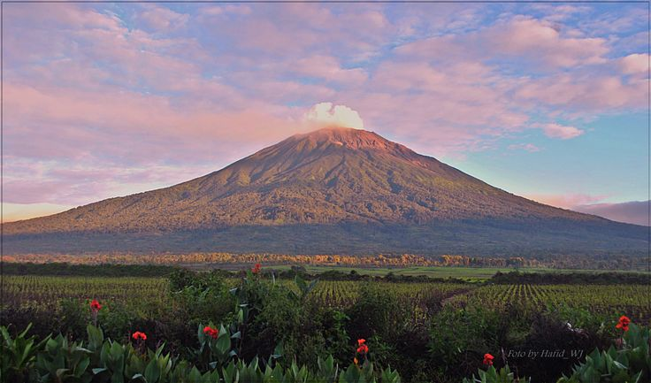
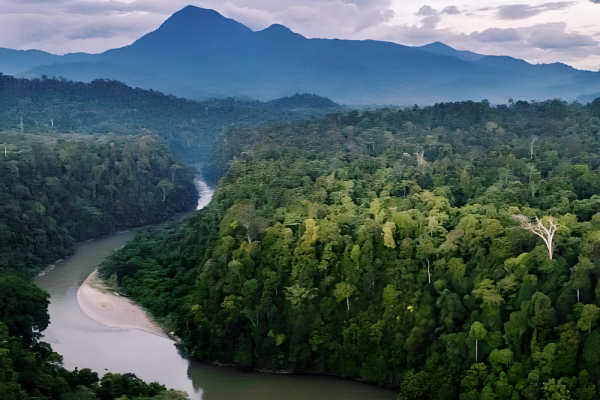
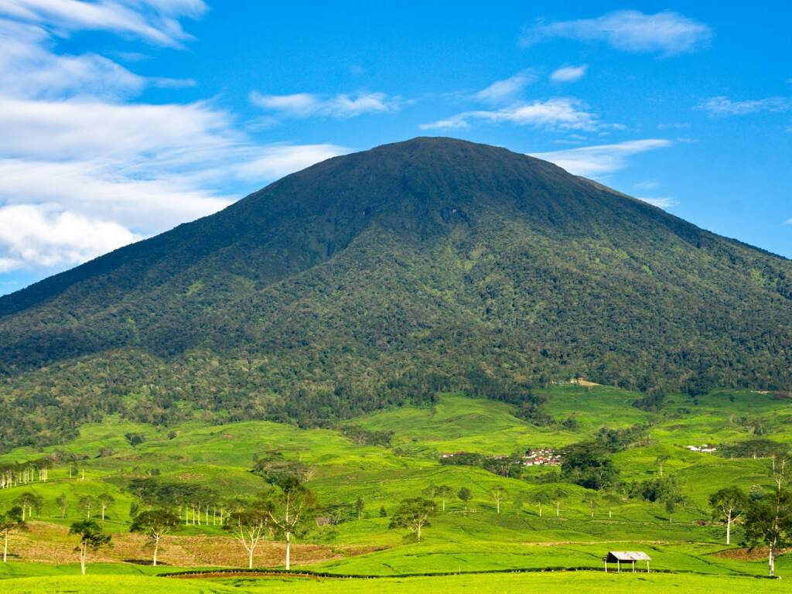

Pulau Sumatera

Sumatera
Sumatra (bentuk tidak baku: Sumatera) adalah pulau keenam terbesar di dunia yang terletak di Indonesia, dengan luas 473.481 km². Penduduk pulau ini sekitar 57.940.351 (sensus 2018). Pulau ini dikenal pula dengan nama lain yaitu Pulau Percha, Andalas, atau Suwarnadwipa (bahasa Sanskerta, berarti "pulau emas"). Kemudian pada Prasasti Padang Roco tahun 1286 dipahatkan swarnnabhūmi (bahasa Sanskerta, berarti "tanah emas") dan bhūmi mālayu ("Tanah Melayu") untuk menyebut pulau ini. Selanjutnya dalam naskah Negarakertagama dari abad ke-14 juga kembali menyebut "Bumi Malayu" (Melayu) untuk pulau ini.
Sumatera Barat

Gunung Kerinci
Gunung Kerinci (juga dieja "Kerintji", dan dikenal sebagai Gunung Gadang, Merapi) adalah gunung tertinggi di pulau Sumatra dan gunung berapi tertinggi di Indonesia. Gunung Kerinci terletak di perbatasan Kabupaten Kerinci, Jambi dan Kabupaten Solok Selatan, Sumatra Barat, di Pegunungan Bukit Barisan dengan ketinggian 3.805 mdpl. Gunung ini juga menjadi batas antara wilayah Suku Kerinci dengan Etnis Minangkabau yang dikelilingi hutan lebat Taman Nasional Kerinci Seblat, merupakan habitat harimau sumatra dan badak sumatra. Gunung Kerinci merupakan gunung berapi bertipe stratovulcano yang masih aktif dan terakhir kali erupsi pada tahun 2022. Pada puncak Gunung Kerinci, dapat melihat di kejauhan membentang pemandangan indah Kota Jambi, Kota Padang, dan Kota Bengkulu. Bahkan Samudra Hindia yang luas dapat terlihat dengan jelas. Gunung Kerinci memiliki kawah seluas 400 x 120 meter dan berisi air yang berwarna hijau. Di sebelah timur terdapat Rawa Bento, rawa berair jernih tertinggi di Sumatra. Di belakangnya terdapat Gunung Tujuh dengan kawah yang hampir tak tersentuh.
Topografi
Gunung Kerinci berbentuk kerucut dengan lebar 13 km (8 mil) dan panjang 25 km (16 mil), memanjang dari utara ke selatan. Pada puncaknya di sisi timur laut terdapat kawah sedalam 600 meter (1.969 kaki) berisi air berwarna hijau. Hingga sekarang, kawah yang berukuran 400 x 120 meter ini masih berstatus aktif. Gunung Kerinci terakhir kali erupsi pada bulan Oktober 2022. Berdasarkan pengamatan Pos Pengamatan Gunung Kerinci, tinggi kolom abu akibat erupsi itu mencapai sekitar ± 750 meter di atas puncak (± 4555 m di atas permukaan laut). Gunung Kerinci termasuk dalam bagian dari Taman Nasional Kerinci Seblat (TNKS). TNKS adalah sebuah wilayah konservasi yang memiliki luas 1.484.650 hektare dan terletak di wilayah empat provinsi, yang mana sebagian besarnya berada di wilayah Jambi. TNKS sendiri merupakan bagian dari Pegunungan Bukit Barisan yang memanjang dari utara ke selatan di Pulau Sumatra. TNKS juga ditetapkan sebagai situs Warisan Dunia The Tropical Rainforest Heritage Of Sumatra (TRHS) tahun 2006.
Aceh

Gunung Leuser
Taman Nasional Gunung Leuser (biasa disingkat TNGL) adalah salah satu Kawasan Pelestarian Alam di Indonesia seluas 1.094.692 hektare yang secara administrasi pemerintahan terletak di Provinsi Aceh dan Sumatra Utara. Provinsi Aceh yang terdeliniasi TNGL meliputi wilayah Subulussalam, Aceh Selatan, Aceh Singkil, Aceh Tengah, Gayo Lues, Bener Meriah, Aceh Tamiang, sedangkan Provinsi Sumatra Utara yang terdeliniasi TNGL meliputi Kabupaten Dairi, Karo, dan Langkat. Taman nasional ini mengambil nama dari Gunung Leuser yang menjulang tinggi dengan ketinggian 3404 meter di atas permukaan laut di Aceh. Taman nasional ini meliputi ekosistem asli dari pantai sampai pegunungan tinggi yang diliputi oleh hutan lebat khas hujan tropis. Dikelola dengan sistem zonasi yang dimanfaatkan untuk tujuan penelitian, ilmu pengetahuan, pendidikan, menunjang budidaya, pariwisata, dan rekreasi.
Sejarah
Sejarah terbentuknya TNGL diawali pada tahun 1920-an atau zaman Pemerintah Kolonial Belanda, melalui serangkaian proses penelitian dan eksplorasi seorang ahli geologi Belanda bernama F.C. Van Heurn di Aceh. Dalam perkembangannya muncul inisiasi positif yang didukung para tokoh masyarakat untuk mendesak Pemerintah Kolonial Belanda agar memberikan status kawasan konservasi (Wildlife Sanctuary) dan status perlindungan terhadap kawasan yang terbentang dari Singkil (pada hulu Sungai Simpang Kiri) di bagian selatan, sepanjang Bukit Barisan, ke arah lembah Sungai Tripa dan Rawa Pantai Meulaboh, di bagian utara. Pada tanggal 6 Februari 1934, dilaksanakan Deklarasi Tapak Tuan yang merupakan tekad dari perwakilan masyarakat lokal di sekitar kawasan leuser untuk melakukan perlindungan lingkungan yang sekaligus mengatur sanksi pidana. Deklarasi ini juga ditandatangani oleh Gubernur Hindia Belanda. Berdasarkan hal tersebut, pada tanggal 3 Juli 1934 ditetapkan Suaka Margasatwa Gunung Leuser dengan luas 142.800 Ha berdasarkan Zelfbestuur Besluit (ZB) Nomor 317/35. Tahun 1936 ditetapkan kawasan Suaka Margasatwa Kluet di Provinsi Aceh dengan luas 20.000 Ha. Tahun 1938 ditetapkan kawasan Suaka Margasatwa Langkat di Provinsi Sumut dengan luas 51.000 Ha. Tahun 1976 ditetapkan kawasan Suaka Margasatwa Kappi di Provinsi Aceh dengan luas 142.000 Ha. Pada tanggal 6 Maret 1980 Menteri Pertanian mengumumkan keempat suaka margasatwa tersebut dan beberapa hutan wisata sebagai di sekitarnya sebagai kawasan taman nasional. Pada tahun 1984, wilayah kerja TNGL ditetapkan mencakup 5 kawasan Suaka Margasatwa dan 2 Hutan Wisata, seluas 862.975 Ha. Tanggal 23 Mei 1997 dilakukan penunjukan Taman Nasional Gunung Leuser dengan luas 1.094.692 hektar. Secara yuridis formal, keberadaan Taman Nasional Gunung Leuser untuk pertama kali dituangkan dalam Pengumuman Menteri Pertanian Nomor: 811/Kpts/Um/II/1980 tanggal 6 Maret 1980 tentang peresmian 5 (lima) Taman Nasional di Indonesia, yaitu; Taman Nasional Gunung Leuser, Taman Nasional Ujung Kulon, Taman Nasional Gede Pangrango, Taman Nasional Baluran, dan Taman Nasional Komodo. Berdasarkan Pengumuman Menteri Pertanian tersebut, ditetapkan luas Taman Nasional Gunung Leuser adalah 792.675 ha. Pengumuman Menteri Pertanian tersebut ditindaklanjuti dengan Surat Direktorat Jenderal Kehutanan Nomor: 719/Dj/VII/1/80, tanggal 7 Maret 1980 yang ditujukan kepada Sub Balai KPA Gunung Leuser. Dalam surat tersebut disebutkan bahwa diberikannya status kewenangan pengelolaan Taman Nasional Gunung Leuser kepada Sub. Balai KPA Gunung Leuser.
Sumatera Selatan

Gunung Dempo
Gunung Dempo (Besemah : Dimpu) memiliki ketinggian (3.142 mdpl) terletak di perbatasan provinsi Sumatra Selatan dan provinsi Bengkulu tepatnya di kota dingin penghasil kopi robusta[butuh rujukan] yaitu Kota Pagaralam. Gunung Dempo terletak di kota Pagaralam, dengan jarak tempuh darat sekitar 7 jam dari Palembang, ibu kota provinsi Sumatra Selatan. Sesuai dengan namanya, Kota Pagaralam dikelilingi oleh pegunungan Bukit Barisan dan yang tertinggi adalah Gunung Dempo.